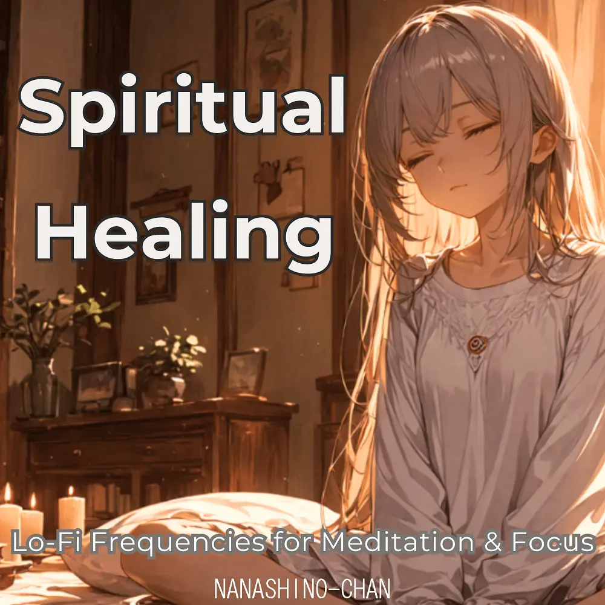

Lo-Fi
Spiritual Healing: Lo-Fi Frequencies for Meditation & Focus
Nanashino-chan
Nanashino-chanの「Spiritual Healing: Lo-Fi Frequencies for Meditation & Focus」。Lo-Fiを楽しめる全19曲のインストゥルメンタル作品です。「Celestial Awakening / Ethereal Tranquility」などを収録。気になる曲を試聴して、配信サービスでお気に入りを見つけてください。
2025-04-10 リリース · 19 曲 · Instrumental
アルバムを試聴
気になる音楽を、ここから。
曲を選ぶまでジャケットを表示します。試聴にはYouTubeを使用します。
YOUTUBE PREVIEW
試聴する曲を選んでください
曲を選ぶまでジャケットを表示します。試聴にはYouTubeを使用します。
再生できない場合は、配信サービスでアルバムや曲を開いてください。
配信サービスでアルバムを探す
「検索」のリンクは検索結果を開きます。サービス内でアルバムや曲を選択してください。
収録曲一覧 19
- 01Celestial Awakening
- 02Ethereal Tranquility
- 03Sacred Frequencies
- 04Harmonic Flow
- 05Whispers of the Cosmos
- 06Spiritual Serenity
- 07Echoes of Healing
- 08Chakra Balance
- 09Divine Harmony
- 10Peaceful Resonance
- 11Energy Alignment
- 12Spiritual Meditation
- 13Vibrational Calm
- 14Soul Renewal
- 15Inner Peace Frequencies
- 16Universal Connection
- 17Healing Frequencies
- 18Cosmic Bliss
- 19Final Reflection
SNSで使いたい音源を探す
「Nanashino-chan ＋ 曲名」をコピーして、SNSアプリの音源検索に貼り付けてください。音源の表示は地域やアカウントにより異なります。コピー機能は利用許諾を付与するものではありません。